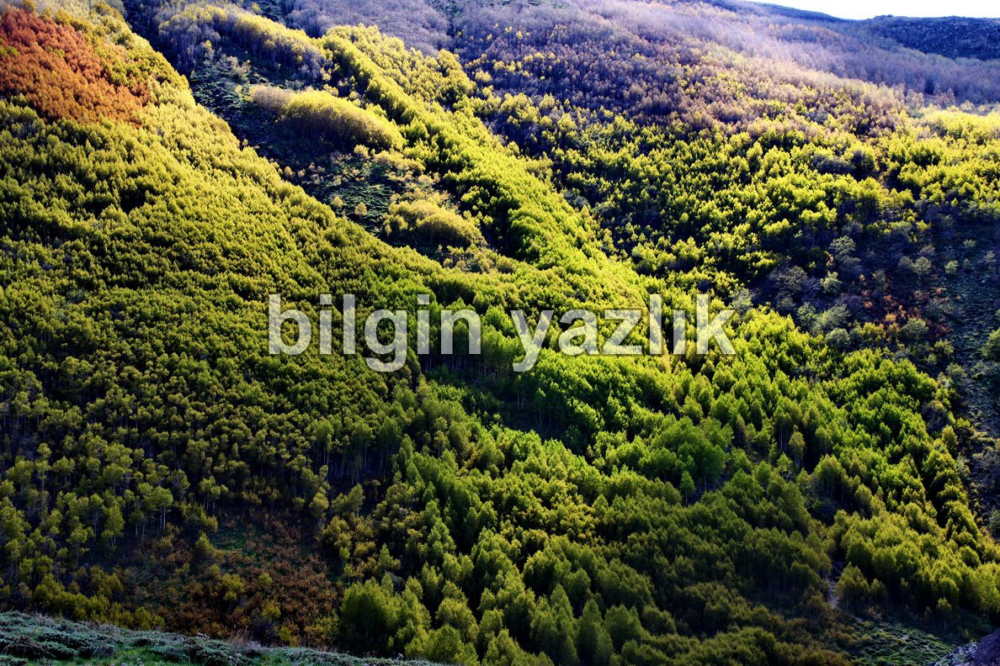
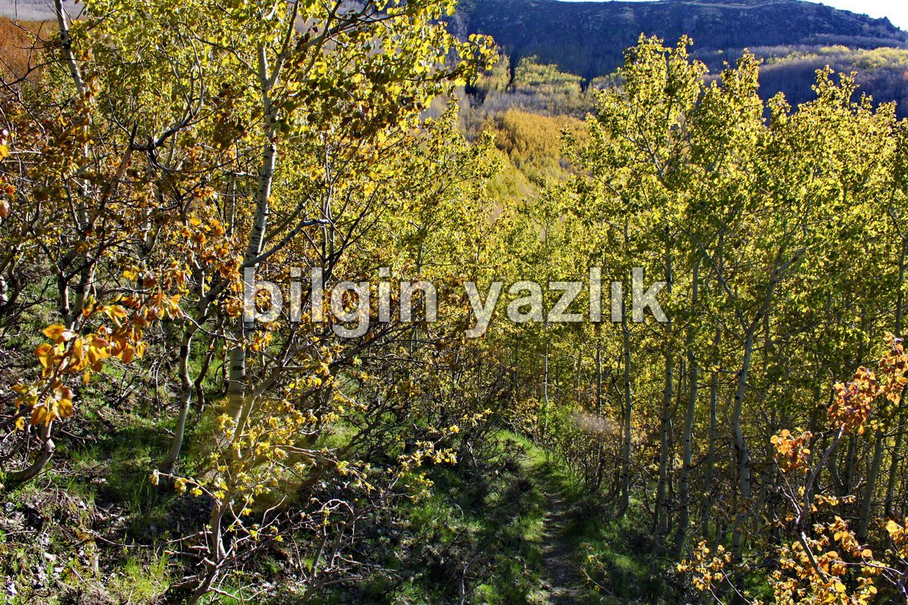
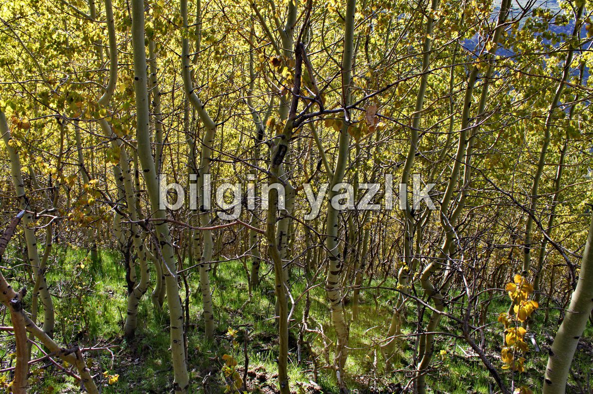
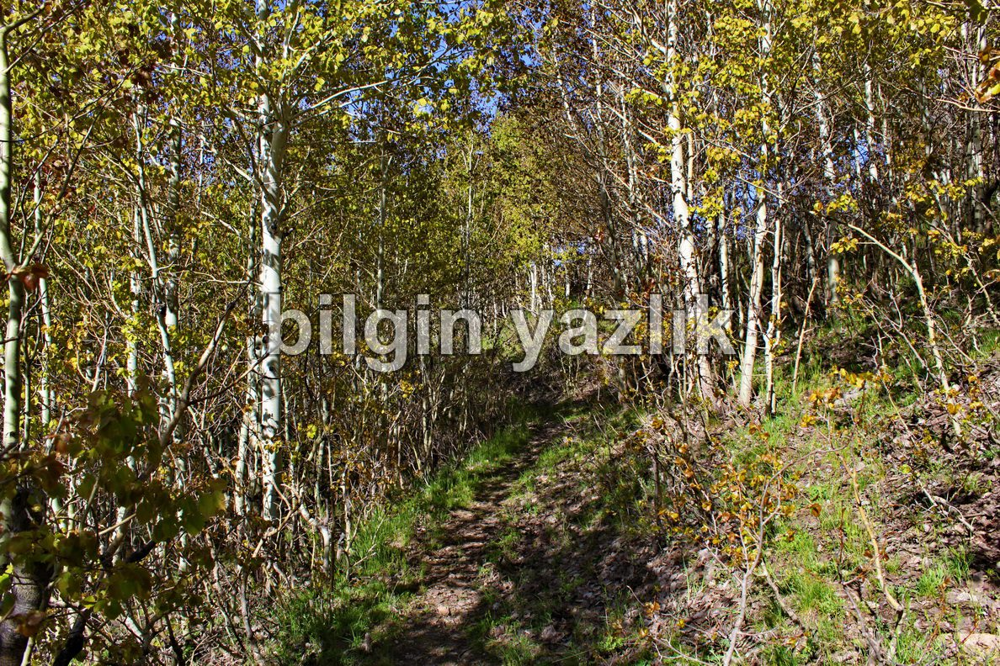
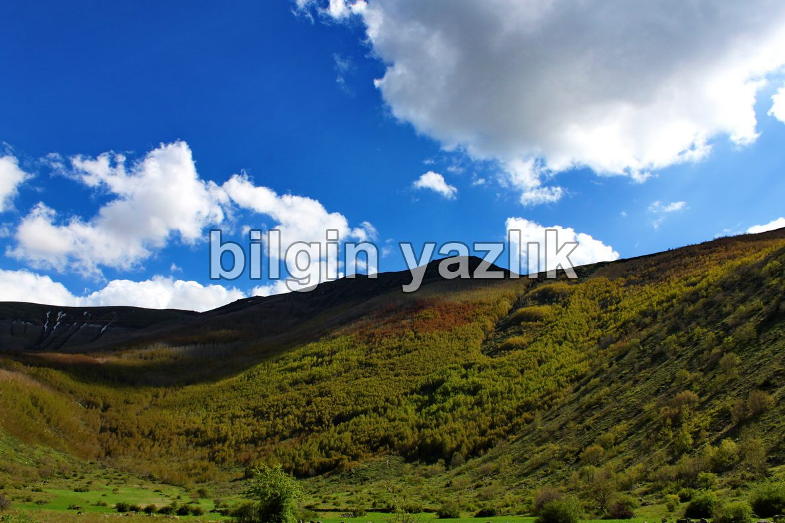
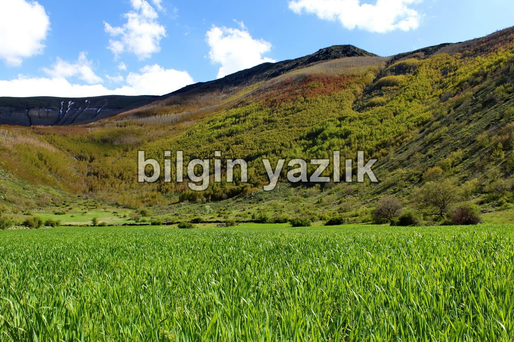

Kayseri & Koramaz · 25 Mayıs 2011
Dip Seki
Dip Seki: Erciyes’in batı etekleri, Sakar bağlarının hemen yukarısı, Kızılören ile Hacılar arasında Erciyes etekleri. Kayseri sınırları içerisinde görebileceğiniz yegane vahşi orman burada yer alıyor. Çoğunluğunu yabani kavak ve meşe ağaçlarının oluşturduğu bu orman göz alabildiğine uzanıyor çetin yamaçlarda. Köylüler bu ormanlarda yayla kuruyorlar ve hayvanlarını besliyorlar, ulaşımı yolun kötü olmasından ötürü oldukça zor. Yürüyüş yapılabilecek patikalar ormanın içinde dolaşıyor.
Yaban domuzu ve kurt başlıca yabani hayatı oluştururken, tatlı su kaynağı da bulunuyor.






Bu yazı taliyol arşivinden taşınmıştır. · özgün kayıt